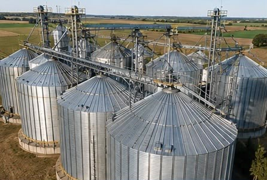
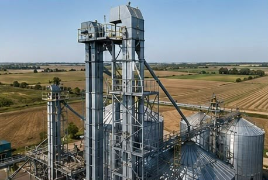
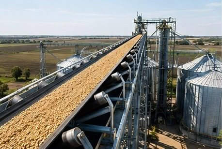
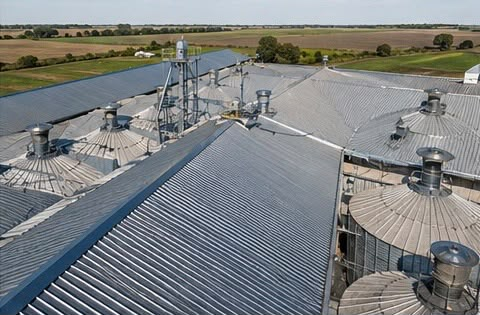
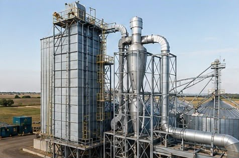
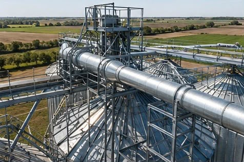
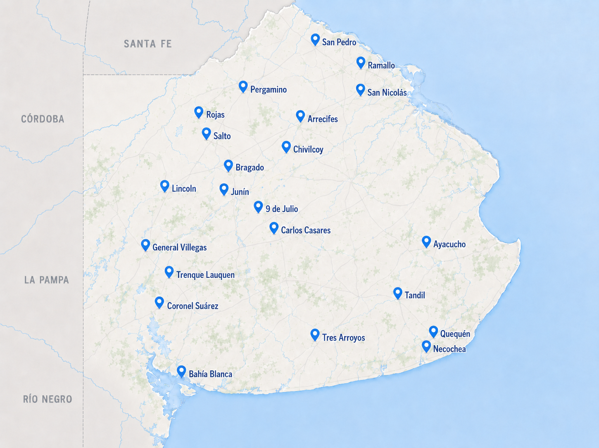
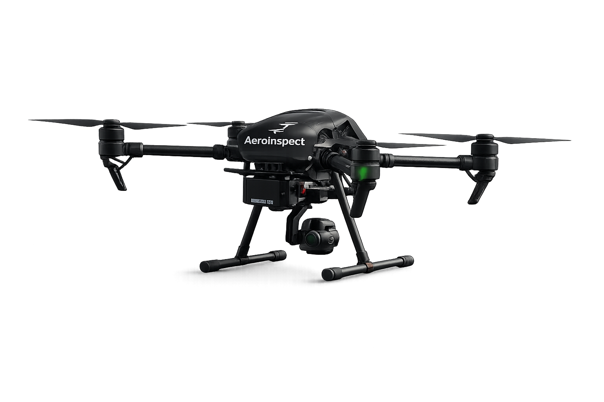
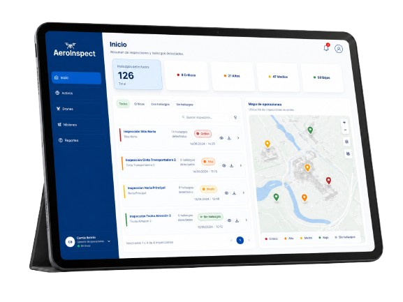

Plantas de acopio · Agroindustria
Una mejor inspección empieza desde el aire
Transformá cada recorrido en información para decidir el mantenimiento de tu planta.
Por qué cambiar la forma de inspeccionar
Anticiparse siempre cuesta menos que reparar
Una falla que no se detecta a tiempo termina en paradas de planta, reparaciones costosas y pérdida operativa.
Cómo funciona
De la planificación a una mejor decisión
-
01
Organizá
Planificá inspecciones y mantené un cronograma adaptable a las necesidades de tu planta.
-
02
Inspeccioná
El dron captura imágenes y videos de los activos sin interrumpir la operación.
-
03
Detectá
El sistema analiza las imágenes, identifica anomalías y registra cada hallazgo automáticamente.
-
04
Decidí
Consultá el historial de cada activo, compará inspecciones y priorizá el mantenimiento con información clara.
Activos que inspeccionamos
Puntos críticos donde una falla impacta la operación






Un registro vivo del estado de tu planta
Cobertura Operativa
Cerca de donde la agroindustria lo necesita
Trabajamos en los principales corredores agroindustriales de Buenos Aires, acercando inspecciones aéreas a plantas de acopio de toda la provincia.



Solución integrada
AeroInspect combina drones profesionales y una plataforma propia para ofrecer una experiencia de inspección precisa, ordenada y confiable.
Capturas claras para revisar activos críticos.
Una plataforma diseñada para el trabajo real en planta.
Todo el proceso conectado, simple y listo para usar.
Ver desde arriba cambia lo que podés anticipar
Contacto
Hablemos de tu planta
Escribinos para conocer la solución, resolver dudas o ver cómo AeroInspect puede adaptarse a tu operación.